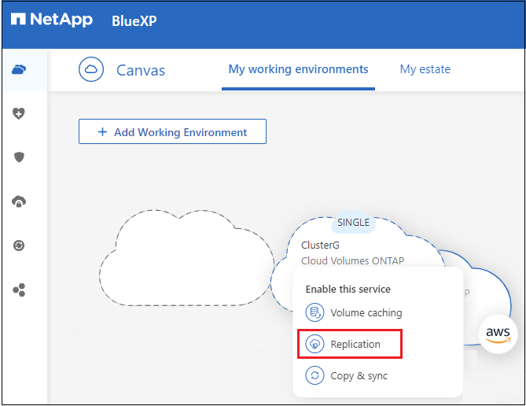

发行说明
发行说明
设置数据复制
 建议更改
建议更改
您可以通过选择一次性数据复制进行数据传输，或者选择灾难恢复或长期保留的重复计划，在 ONTAP 工作环境之间复制数据。例如，您可以设置从内部 ONTAP 系统到 Cloud Volumes ONTAP 的数据复制，以便进行灾难恢复。
第1步：查看数据复制要求
在复制数据之前，您应确认满足 Cloud Volumes ONTAP ，内部 ONTAP 集群或适用于 ONTAP 的 Amazon FSx 的特定要求。
- 工作环境
-
如果您尚未创建，则需要在数据复制关系中为源和目标创建工作环境。
- 版本要求
-
在复制数据之前，您应该验证源卷和目标卷是否运行兼容的 ONTAP 版本。
- 特定于 Cloud Volumes ONTAP 的要求
-
-
实例的安全组必须包含所需的入站和出站规则：具体来说，是 ICMP 以及端口 11104 和 11105 的规则。
这些规则包括在预定义的安全组中。
-
要在不同子网的两个 Cloud Volumes ONTAP 系统之间复制数据、必须将子网路由在一起（这是默认设置）。
-
要在不同云提供商中的两个 Cloud Volumes ONTAP 系统之间复制数据，您必须在虚拟网络之间建立 VPN 连接。
-
- 特定于 ONTAP 集群的要求
-
-
必须安装活动 SnapMirror 许可证。
-
如果集群位于您的内部环境中、则您应在企业网络与云中的虚拟网络之间建立连接。这通常是一个 VPN 连接。
-
ONTAP 集群必须满足其他子网、端口、防火墙和集群要求。
-
- Amazon FSX for ONTAP 的特定要求
-
-
如果Cloud Volumes ONTAP 是此关系的一部分、请通过启用VPC对等或使用传输网关来确保VPC之间的连接。
-
如果内部ONTAP 集群是此关系的一部分、请使用直接连接或VPN连接确保内部网络与AWS VPC之间的连接。
-
第2步：在系统之间复制数据
您可以通过选择一次性数据复制（有助于将数据移入和移出云）或重复计划（有助于灾难恢复或长期保留）来复制数据。
-
从导航菜单中、选择*存储>画布*。
-
在Canvas上、选择包含源卷的工作环境、将其拖动到要将卷复制到的工作环境中、然后选择*复制*。

其余步骤举例说明如何在Cloud Volumes ONTAP 或内部ONTAP 集群之间创建同步关系。
-
* 源和目标对等设置 * ：如果显示此页面，请为集群对等关系选择所有集群间 LIF 。
应配置集群间网络，使集群对等方具有 _ 成对的全网状连接 _ ，这意味着集群对等关系中的每个集群对都在其所有集群间 LIF 之间建立连接。
如果具有多个 LIF 的 ONTAP 集群是源或目标，则会显示这些页面。
-
* 源卷选择 * ：选择要复制的卷。
-
* 目标磁盘类型和分层 * ：如果目标是 Cloud Volumes ONTAP 系统，请选择目标磁盘类型并选择是否要启用数据分层。
-
* 目标卷名称 * ：指定目标卷名称并选择目标聚合。
如果目标是 ONTAP 集群，则还必须指定目标 Storage VM 。
-
* 最大传输速率 * ：指定可传输数据的最大速率（以 MB/ 秒为单位）。
您应限制传输速率。无限速率可能会对其他应用程序的性能产生负面影响，并可能影响您的 Internet 性能。
-
复制策略：选择默认策略或选择*其他策略*，然后选择一个高级策略。
如需帮助， "了解复制策略"。
如果选择自定义备份（ SnapVault ）策略、与策略关联的标签必须与源卷上 Snapshot 副本的标签匹配。有关详细信息 … "了解备份策略的工作原理"。
-
* 计划 * ：选择一次性副本或重复计划。
有多个默认计划可用。如果您需要其他计划，则必须使用 System Manager 在 _destination_cluster 上创建一个新计划。
-
*Review *：查看您的选择并选择*Go *。
BlueXP将启动数据复制过程。您可以从BlueXP复制服务查看有关卷关系的详细信息。